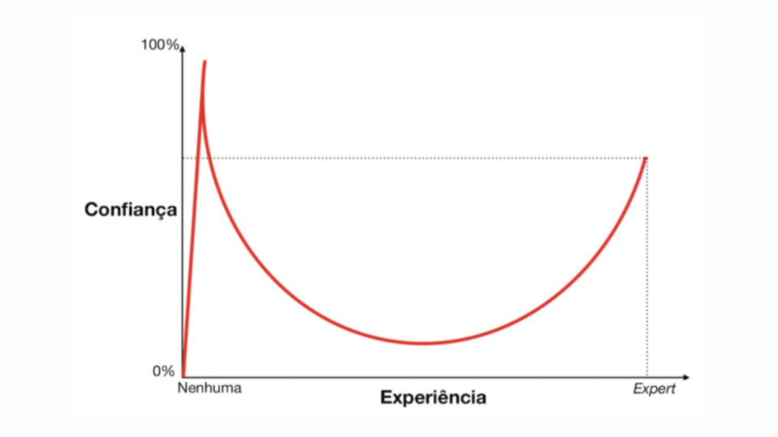

Introdução
Sobre mim
Vou começar com uma breve história minha: Muito tempo atrás eu sempre estive pensando em aprender japonês, porém não tinha muita vontade por não ver muito o porquê de começar, já que todas as obras japonesas que eu tinha interesse já haviam traduções.
Então eu comecei a ter interesses pelas VNs(Visuais Novels), até que me deparo pela abertura de Sakura no Uta(no qual me fez ter uma vontade absurda de testar) e quando fui pesquisar... Só tinha a VN em japonês. Mas ainda aí normal, até que eu decido começar a ler o primeiro cápitulo de White Album 2 e amei demais. Então eu fui tentar ler o próximo cápitulo e... a tradução inglesa ainda estava em testes e não estava tudo traduzido. Foi esse de fato meu ponta pé inicial para querer aprender japonês e foi assim que o meu trabalho duro começa.
Primeiros passos
Quando comecei a estudar de fato, lembro de não haver um lugar unificando todos os materiais e ferramentas como TheMoeWay (algo que me deu inspiração para fazer esse guia). Então antes de começar os meus estudos tive que pesquisar bastante e testar diferentes coisas. Além disso, os modelos de ensino mais óbvios era pagar algum curso de japonês, no qual tenho uma visão bem cética sobre. Principalmente pela propaganda exagerada de "aprenda japonês em 3 meses" ou por nunca ter visto uma pessoa que realmente entendia japonês ter dita que fez alguns desses cursos.
Como levar o guia
Em primeiro lugar, esse guia é junção de vários materias que são usados por mim e por outras pessoas que usam ou já usaram por um tempo e recomendam.
Um dos objetivos desse guia não é fazer você seguir um método só, mas sim ver alguns e decidir por conta própria o que mais combina com seu estilo, pois não existe guia 100% definitivo, varia de pessoas para pessoas. Ou seja, não seguir firmimente o guia, mas sim ter uma noção como as coisas funcionam.
Vale lembrar, o objetivo desse guia não é ser muito extenso e cansativo sobre os tópicos abordados. Então caso queira se aprofundar em um determinado assunto, pesquise! A wikipedia inglesa contém bastante informação aprofundada e extensa.
E por último, vale lembrar que tudo que disponibilizamos aqui é 100% gratuito!
Como a língua japonesa funciona
Ela possui 3 alfabetos principais que são Hiragana, Katakana e os temidos Kanjis. Para você poder consumir obras japonesas, você precisa entender bem todos esses 3.
Tanto o Hiragana quanto o Katakana são bem mais fáceis de decorar pois possuem poucos simbulos para se memorizar comparado ao Kanji, que a lista de simbulos que existem podem chegar a 200 mil. Porém obviamente a quantidade de kanjis utilizados frequentemente é bem abaixo de 3 mil (o Ministério de Educação Japonês estipula o uso de 2136 kanjis para serem ensinados nas escolas).
Agora você pode estar se perguntando como são formadas as palavras, né? Pois bem, as palavras japonesas são formadas através de uma combinação desses caracteres. Veja o tópico Leitura para mais detalhes.
Dificuldade do idioma
Japonês definitivamente é bem mais difícil do que inglês ou espanhol, pois é uma língua com poucas palavras parecidas e uma gramática completamente diferente do que a gente está acostumado. Mas mesmo assim, não é um bicho de sete cabeças pelo motivo que muitas dívidas que você terá ao longo do caminho, possivelmente terá uma resposta na internet fácil de pesquisar.
Sendo assim, sua sensação de aprendizado será parecido com o gráfico abaixo:

No qual nas primeiras semanas de aprendizados onde aprendeu hiragana & katakana e um básico de grámatica sentirá sua confinça quase no 100%, mas assim que tentar ler uma obra que tenha vontade ou avançar nos tópicos de grámatica, sentirá cada vez menos confiança no idioma até chegar em uma parte de desânimo total. Não desista, porque isso é normal e uma hora ou outra vai acontecer, e se você continuar mesmo nesse estado, uma hora sua confiancia volta a aumentar.
Problema do guia
Infelizmente no momento, não há muito material ou ferramenta em português, o que fará você ter pelo menos um inglês básico para poder progredir mais rápido. Mesmo assim, não é algo que vai te impossibilitar de aprender porque ainda há algumas resalvas. A única coisa que vai realmente ser mais díficil será o estudo da gramática pois os poucos guias de gramáticas em potuguês tem uma qualidade de tradução bem duvidosa o que pode retardar um pouco o estudo.
Dúvidas iniciais
Quanto tempo leva pra aprender japonês?
Depende, mas se fizer tudo certinho pelo menos 1 hora diariamente, em um ano já estará lendo obras fáceis tranquilamente e obras médias com pouca dificuldade, mas ainda curtindo. Mas isso não significa que você estará fluente.
Por que não devo pagar por cursos online de japonês?
Perda de dinheiro sinceramente. Enquanto você podia estar aprendendo muito mais de graça lendo algo que tenha vontade e anotando cada palavra ou regra gramátical nova, você fica preso no que eles querem te ensinar que em geral é muita pouca coisa pelo preço cobrado.
Devo treinar lendo em romaji?
Jamais treine usando romaji!!! Leia a pronúncia das palavras em hiragana.